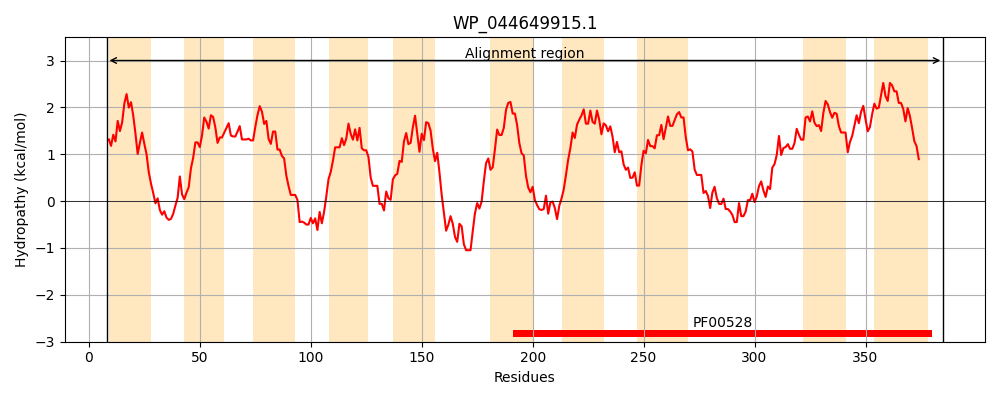
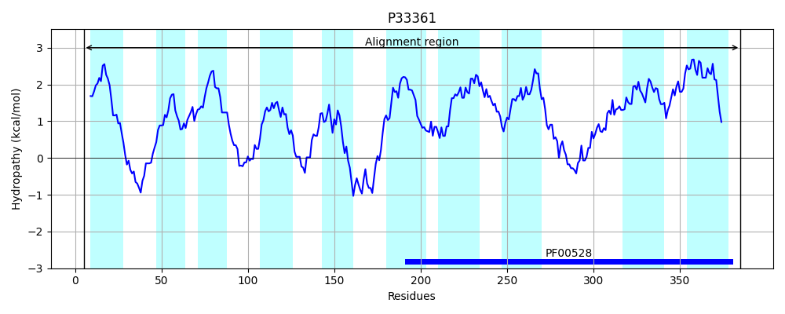
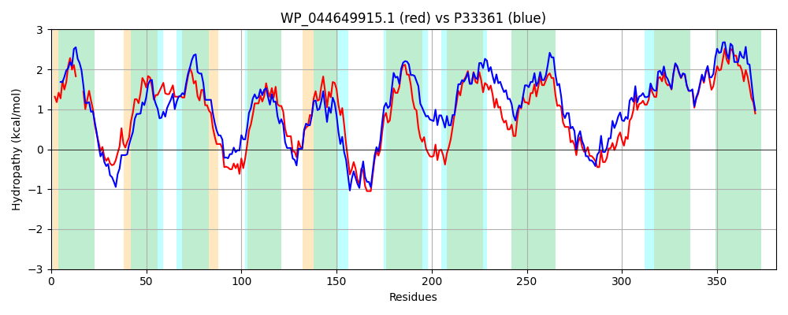

Hit Accession: P33361
Hit TCID: 3.A.1.12.15
Hit Description: gnl|BL_ORD_ID|9908 gnl|TC-DB|P33361|3.A.1.12.15 Putative osmoprotectant uptake system permease protein YehY OS=Escherichia coli (strain K12) GN=yehY PE=1 SV=2
Mach Len: 381
e:0.000000
Query TMS Count : 10
Hit TMS Count: 10
TMS-Overlap Score: 8.800000
Predicted Substrates:CHEBI:3665;choline, CHEBI:3073;glycine betaine, CHEBI:5460;glycine
BLAST Alignment:
Score: 1190 , Bit scores: 462 bits, E-value: 1.9e-163, Alignment length: 381, Percentage identity: 63
Query: 8 RVGLLLTGLLLVTL---ALPFITYAPNRLLSGEGRGLWQVMPWLAGVQMAAVLAGMLLCWLPGRAVPLLHLLLAELLFPLLIWGSGQAALELSRHGSPLARTSPGSGLWLSLALCLLLASEAIRHLTVRPLWRWLLNAQVWLLPIILLATGALDQLSLLKEYANRQEVFDDALRQHLLLLFGTLLPGLLIGLPLGVWLWRRPRWQAPAFTVLNVIQTIPSVALFGLLIAPLAGLARYFPALGELGVSGTGMAPALIALTLYALLPLVRGVVTGLQQVPQDALESATAMGMSAGQRFRQVQLPLAMPVLLRSLRVVSVQTVGMAVVAALIGAGGFGALVFQGLLSSALDLVLLGVVPTIALAVVVDALFALWGAWLKGEAND 385
R+ +L LLL+T ALPFI+YAPNRL+SGEGR LWQ+ P + + A + C++PG+ + L+LA+ +F LL+WG+G+AA +L+++GS LARTS GSG WL+ AL LL S+AIR ++ PLWRWLL+ Q+ ++P+ LL +G L+ LSL+KEYANRQ+VFDDAL QHL LLFG +LP L+IG+PLG+W + Q F++LNVIQT+PSVALFGLLIAPLA L FP LG LG++GTGM PALIAL LYALLPLVRGVV GL Q+P+D LESA AMGMS QRF VQLPLA+PV LRSLRVV VQTVGMAV+AALIGAGGFGALVFQGLLSSA+DLVLLGV+P I LAV+ DALF L A LK + ND
Sbjct: 5 RINPVLALLLLLTAIAAALPFISYAPNRLVSGEGRHLWQLWPQTIWMLVGVGCAWLTACFIPGKKGSICALILAQFVFVLLVWGAGKAATQLAQNGSALARTSLGSGFWLAAALALLACSDAIRRISTHPLWRWLLHMQIAIIPLWLLYSGTLNDLSLMKEYANRQDVFDDALAQHLTLLFGAVLPALVIGVPLGIWCYFSTARQGAIFSLLNVIQTVPSVALFGLLIAPLAALVTAFPWLGTLGIAGTGMTPALIALVLYALLPLVRGVVVGLNQIPRDVLESARAMGMSGAQRFLHVQLPLALPVFLRSLRVVMVQTVGMAVIAALIGAGGFGALVFQGLLSSAIDLVLLGVIPVIVLAVLTDALFDLLIALLKVKRND 385 | Protein Hydropathy Plots: |
|---|
|  |  |
Pairwise Alignment-Hydropathy Plot:
|
|---|
|  |